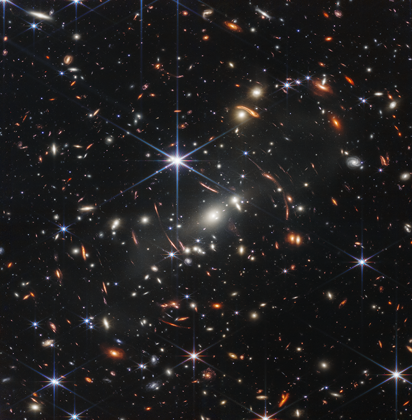

Yüzeyinin renginden dolayı "Kızıl Gezegen" olarak adlandırılan Mars,Dünya'dan çıplak gözle görülebiliyor. Gece gökyüzünde kırmızı bir yıldır şeklinde gördüğümüz Mars, Güneş'e en uzak kayalık gezegendir. Koşullarının bir ölçüde Dünya'ya benzemesi, bilim insanlarını Mars'ta yaşamın var olabileceğine inanmaya yölendirdi. Mars'a birçok uzay görevi gerçekleştirildi ve gezegende sıvı halde su olduğu doğrulandı.
SON GELİŞMELER
Almanya Yapay Zeka Merkezi, Avrupa'nın Silikon Vadisi Olacak

Yeni Sodyum Pil Teknolojisi Enerji Depolama Maliyetlerini Düşürebilir

James Webb Uzay Teleskobu'nun Bir Yılı

Birbirine Komşu Olmayan Ağ Düğümleri Arasında İlk Kez Kuantum Işınlama Gerçekleştirildi

iOS 15.7.5, macOS 11.7.6 ve macOS 12.6.5 çıktı
Dünyanın En Hızlı İnternet Ağı 46 Terabit/s Hıza Yükseltildi

Gökbilimciler Hubble'ı Kullanarak Gezegenlerle Çevrili ve Uzay Kayası Kuşağı Olan Beyaz Bir Cüce Buldular
Gerçekten robotların süper biyo-mimetrik elleri ihtiyacı var mı? Aslen çok da gerekmiyor ve çoğu iş için özelleşmiş robotlar kullanılıyor. Ellerimiz bir çok şeyi kavramamıza yarayan iyi tasarlanmış yapılardır. İnsansı robotların yapımında doğal görünen mekanizmaların ve yapıların olması gerekiyor. Araştırmacıların geliştirdiği ve şeffaf bir deriye sahip eli aksiyon halinde görmek oldukça ilginç olabiliyor. İnsan elindekine benzer kaslara sahip bu robot kolu izlemek gerçekten ilginç.